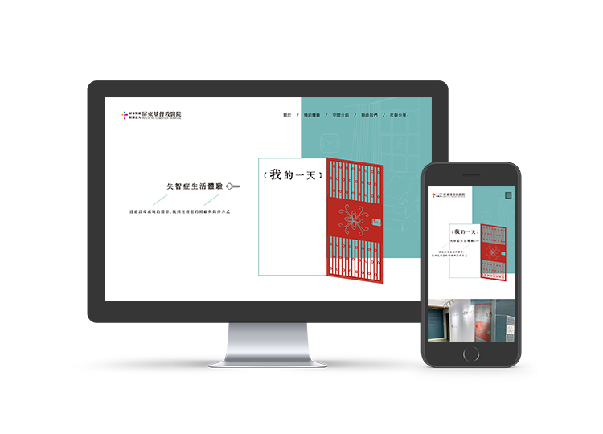

DEMENTIA EXPERIENCE WEBSITE DESIGN
我的一天 失智症生活體驗 預約系統
我的一天 失智症生活體驗 預約系統
・網站介面與流程UI/UX
・前端設計html/css/JavaScript
・嚮應式網頁RWD
・後端預約系統
造訪官網：
https://longdayjourney.com/
SHARE ON

你是否曾經想過，當有一天，你再也不記得身邊的人事物，世界會變得怎麼樣?
由屏東基督教醫院設立之【我的一天】失智症生活體驗，透過展覽、沉浸式體驗、互動討論的方式，使民眾能夠設身處地的親身體驗、換位思考並關心失智症（認知症）的議題。
此次有幸能夠協助屏基完成空間體驗的預約系統，經過討論，我們決定打造一頁式網頁，讓資訊更直觀，也讓民眾能夠更方便做預約，使推廣更方便。
造訪官網：https://longdayjourney.com/